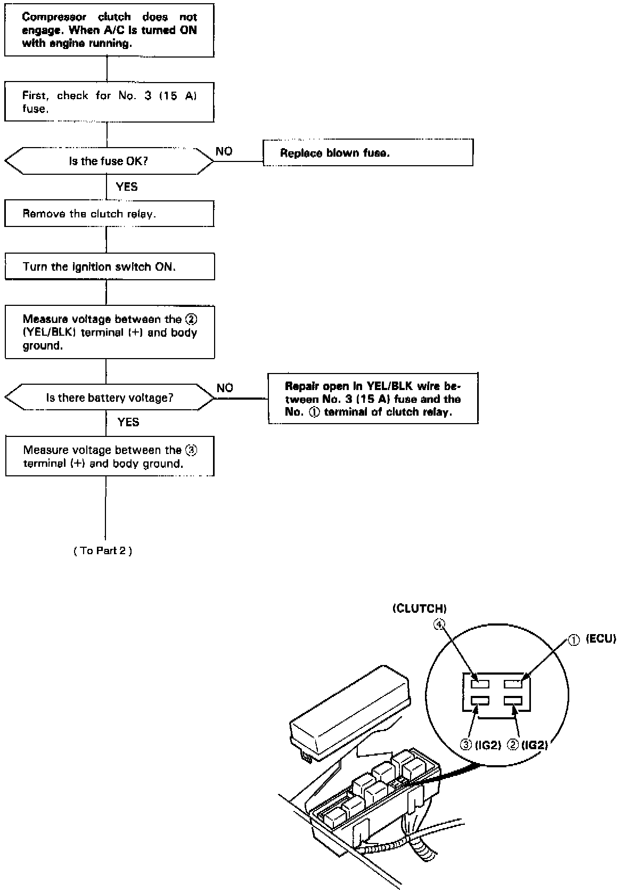
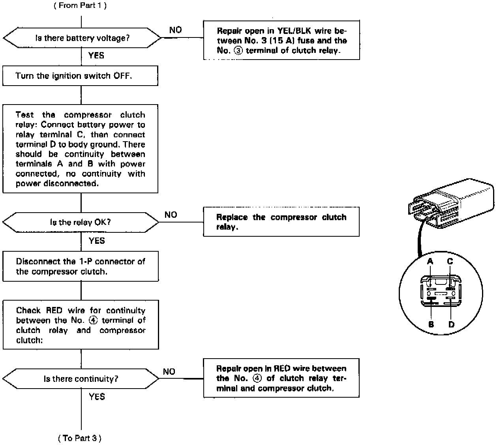
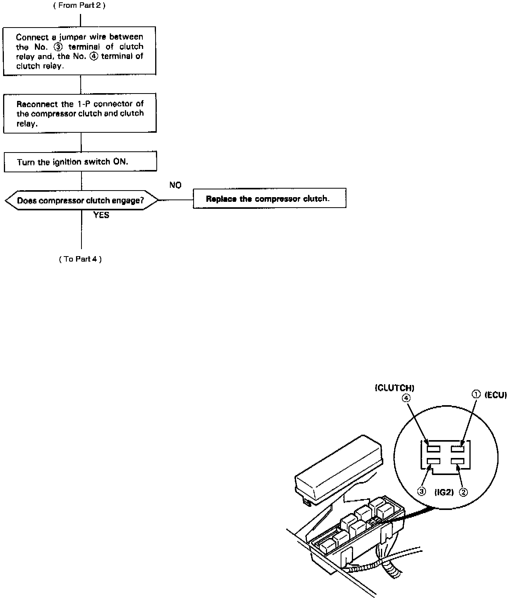
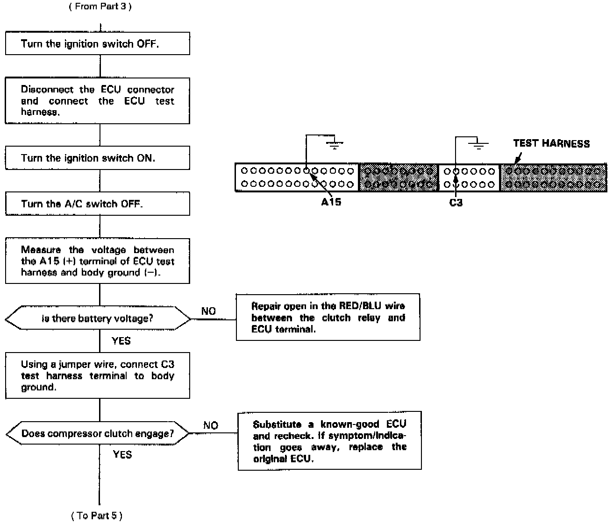
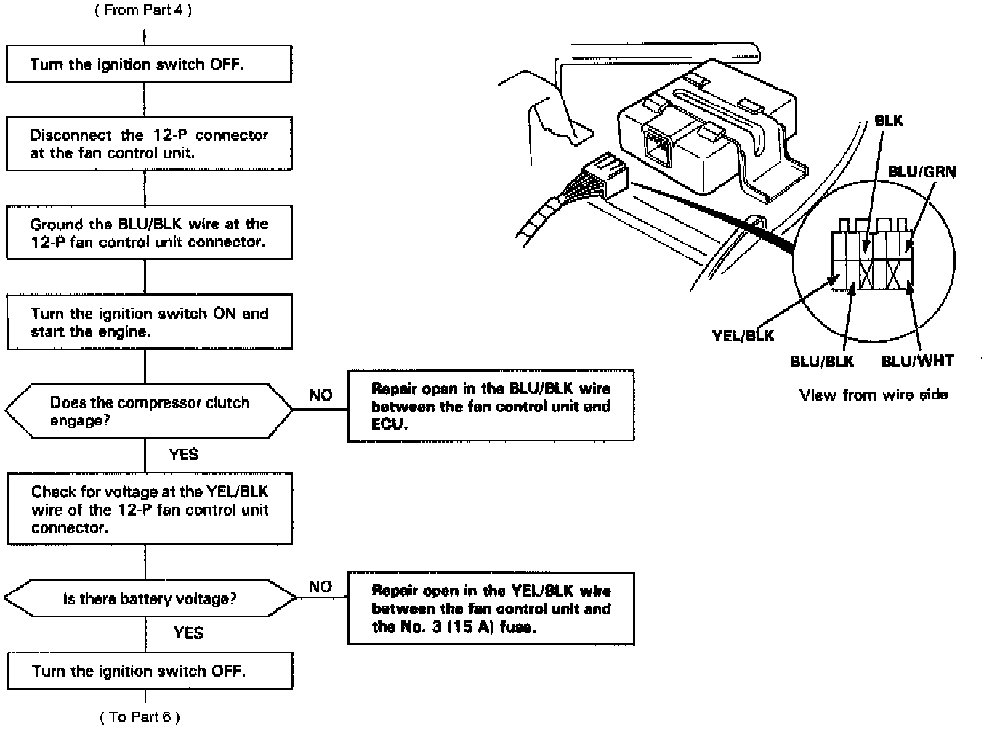
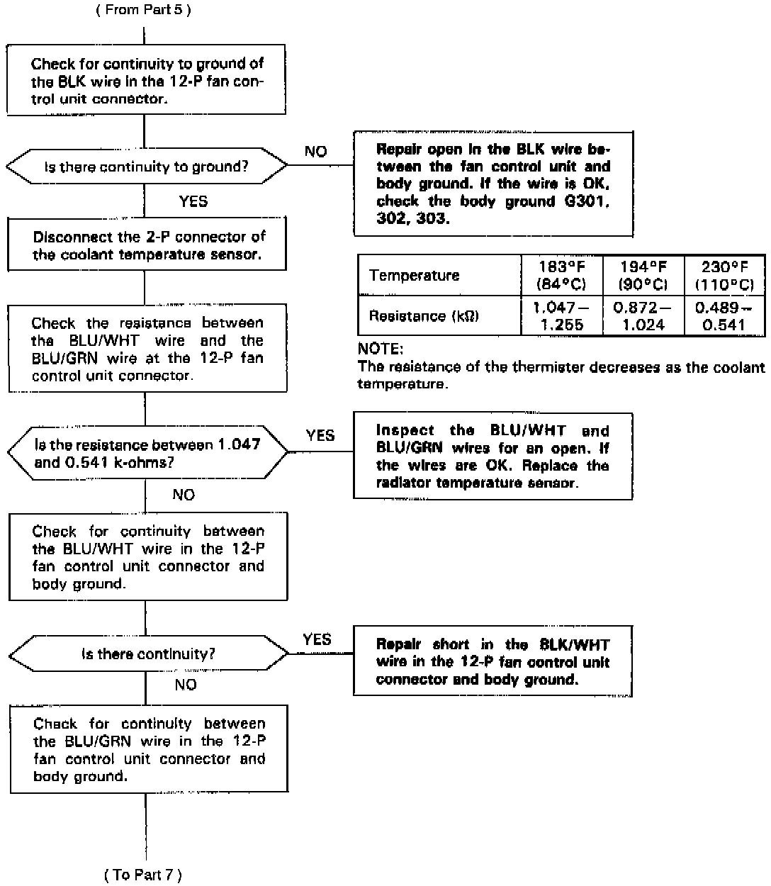
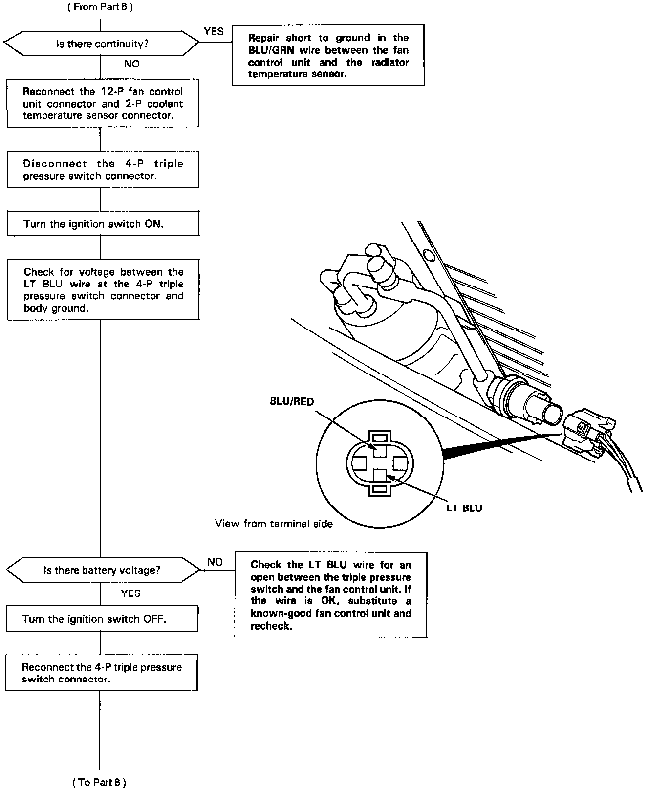

Diagnostic Flowcharts - Automatic Climate Control
A/C Compressor, Part 1 Of 8:

A/C Compressor, Part 2 Of 8:

A/C Compressor, Part 3 Of 8:

A/C Compressor, Part 4 Of 8:

A/C Compressor, Part 5 Of 8:

A/C Compressor, Part 6 Of 8:

A/C Compressor, Part 7 Of 8:
